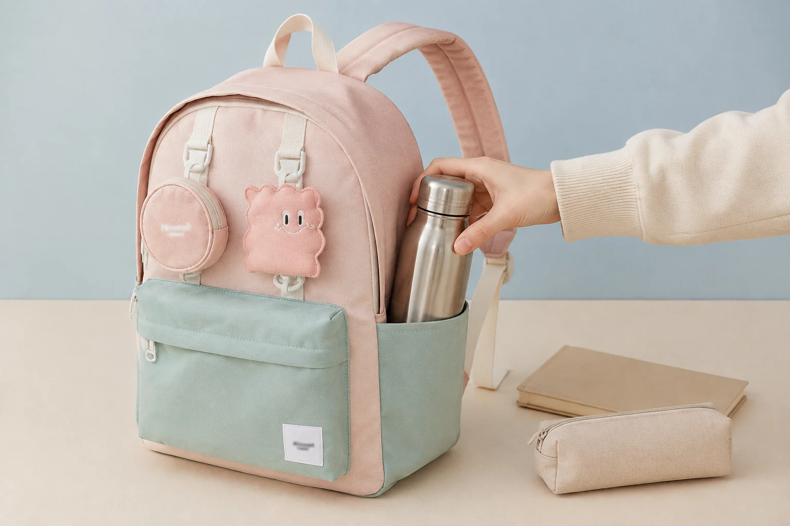

물병 포켓을 고를 때 용량보다 볼 치수

물병을 매일 가져가는 사람에게 가방의 전체 크기보다 먼저 필요한 정보는 물병이 놓일 자리일 수 있습니다. 같은 용량으로 표시된 물병도 몸통과 뚜껑, 손잡이의 모양이 다릅니다. 포켓이 있다는 설명만 보고 선택하면 실제 병의 입구 통과나 꺼내는 방향이 맞지 않을 수 있습니다. 물병 수납을 검토할 때는 현재 쓰는 용기를 직접 기준으로 놓고 가방의 입구와 깊이, 주변 물건과의 관계를 대조해볼 필요가 있습니다.
물병의 가장 넓은 몸통과 전체 높이를 확인합니다. 뚜껑 끝이나 손잡이가 튀어나왔다면 그 부분을 포함한 외형을 따로 봅니다. 원형이 아닌 용기라면 어느 방향으로 넣을지도 필요한 정보입니다. 내용물의 양을 나타내는 숫자와 실제 외형은 구분해 기록하면 됩니다. 늘 같은 용기를 쓴다면 그 병을 기준으로 묻고, 계절마다 다른 병을 쓸 계획이라면 각각의 외형을 대조해야 합니다. 한 물병의 수납 조건을 모든 용기에 적용하지 않는 방식입니다.
포켓 깊이와 입구의 차이
가방의 물병 자리로 설명된 부분이 실제로 있는지 먼저 확인합니다. 그다음 입구와 내부 깊이의 정보를 봅니다. 안쪽이 깊다고 해도 입구를 통과하기 어려우면 넣는 동작이 번거로울 수 있습니다. 반대로 들어간다는 사실만으로 이동 중의 위치가 안정적이라고 정할 수는 없습니다. 실제 물병을 넣고 꺼낼 조건과 여밈이 있는 경우 안내된 방식으로 사용할 수 있는지를 함께 확인하면 됩니다. 온라인 정보가 부족하면 병의 치수를 전달해 문의할 수 있습니다.
입구에 늘어나는 소재나 조절 부위가 있는 것처럼 보이더라도 사진에서 짐작해 사용 범위를 정하지 않습니다. 제품 설명이 안내한 구조와 현재 제품의 조건을 읽습니다. 병을 넣기 위해 힘을 주거나 입구를 강하게 벌려야 한다면 다른 위치나 운반 방법을 검토할 이유가 생깁니다. 같은 용량의 작은 병으로 바꾸는 것만이 해결 방법은 아니므로 현재 사용할 물병의 역할과 가방의 수납 조건을 함께 생각할 수 있습니다.
실제로 넣어볼 수 있다면 병을 넣은 상태에서 잡을 위치와 꺼내는 방향을 봅니다. 뚜껑만 잡아야 하는지, 손잡이를 사용할 수 있는지 해당 물병의 안내도 대조합니다. 내용물이 있는 상태와 비어 있는 상태의 동작이 달라질 수 있으므로 평소 사용하는 조건에서 확인할 필요가 있습니다. 특정 모델이 모든 병에 편하다는 판단보다 자신의 용기를 넣고 이동한 뒤 다시 꺼내는 순서가 어떤지 보는 것이 구매 질문에 가깝습니다.
실제 제품 예시로 Himawari No.2505 제품 정보를 참고할 수 있습니다. 자신의 물병 외형과 선택한 제품의 수납 안내를 함께 놓고 필요한 정보를 확인합니다. 포켓의 구체적인 크기가 안내되어 있지 않다면 병의 지름과 높이, 손잡이를 포함한 폭을 남겨 문의할 수 있습니다. 겉 크기만으로 물병 자리를 추정하기보다 실제로 사용하려는 부위와 용기를 대조하는 방식입니다. 물병을 바꾼 날에도 같은 질문으로 조건을 다시 볼 수 있습니다.

다른 짐에 닿는 자리
물병을 가방 바깥쪽에 둘지 안쪽에 둘지는 실제 구조와 생활 방식에 따라 달라집니다. 안쪽에 둘 경우 종이와 기기, 개인 옷과 닿는 면을 봅니다. 닫힌 용기라도 닫힘은 해당 제품의 안내에서 확인하고, 가방이나 파일이 모든 물기를 막아줄 것으로 가정하지 않습니다. 별도의 주머니를 쓴다면 용도와 닫는 방법도 함께 읽습니다. 용기를 나누어 담는 준비와 용기 자체를 확인하는 준비가 모두 필요합니다.
바깥쪽 자리를 쓴다면 몸 밖으로 나오는 부피를 실제로 봅니다. 좁은 공간에서 가방을 돌릴 때 병과 손잡이가 주변 물건에 닿는지 확인할 수 있습니다. 물병을 꺼낼 때 가방을 내려야 하는지, 닫힌 여밈을 다시 조작해야 하는지도 일상 동작의 조건입니다. 빨리 꺼내기 위해 열린 상태로 두는 방식이 적절한지는 실제 제품 안내를 따라 판단하세요. 편의는 포켓 수보다 사용하는 용기와 이동 장면을 함께 보았을 때 구체적으로 드러납니다.
날에 따라 병을 두 개 가져가거나 다른 용기를 더한다면 평소의 조건과 다시 비교합니다. 한 병을 넣었을 때 편했던 배치가 두 개를 담았을 때도 같은 것은 아닐 수 있습니다. 다른 물건과 한쪽에 몰렸는지, 가방을 닫기 위해 서로 눌리는지 봅니다. 필요한 양과 실제 용기의 외형을 먼저 확인하고 별도 운반이 필요한지 판단할 수 있습니다. 가방의 빈 공간을 목표로 용기를 추가하기보다 그날 사용 계획에 맞춰 구성하면 됩니다.
사용한 용기의 귀가 자리
외출 중 물병을 꺼냈다면 사용 뒤 원래 위치에 둘 수 있는지 봅니다. 책상이나 벤치에 따로 놓았다면 가방을 메기 전에 회수할 물건에 포함하세요. 다른 용기를 구입했거나 물병 포장이 늘었다면 개인 소지품의 위치가 밀리지 않는지 확인할 수 있습니다. 젖은 표면이나 다른 상태가 생겼을 때는 물병과 가방 각각의 안내를 기준으로 정리합니다. 출발 때 정한 자리에 무조건 다시 밀어 넣기보다 현재 상태에서 어떻게 운반할지 판단하면 됩니다.
집에서는 물병을 꺼내 해당 관리 안내에 따라 정리하고 가방 안쪽에 남은 것이 있는지 봅니다. 종이나 파우치가 함께 움직였다면 위치를 다시 정할 수 있습니다. 다음 외출에 쓸 병이 바뀌는 경우에는 외형과 입구를 다시 대조하세요. 수납 기록에는 용량 숫자만 남기지 않고 실제 병의 모델과 치수, 넣고 뺄 때 불편했던 위치를 남길 수 있습니다. 판매자에게 문의하거나 새 후보를 볼 때에도 무엇을 비교해야 하는지 알아보기 쉬워집니다.
물병 수납이 가방 선택의 우선 조건이라면 그 조건을 먼저 충족하는 후보를 남기고 나머지 짐을 더해봅니다. 기기와 서류까지 넣은 상태에서 물병 자리가 유지되는지, 자주 꺼내는 개인 물건을 찾을 수 있는지도 확인합니다. 물병 한 개만 들어가는 결과와 하루의 가방을 실제로 사용하는 결과는 구분해야 합니다. 자신의 용기와 전체 소지품, 이동 중 꺼낼 동작을 함께 보면 제품 정보에서 필요한 질문이 더 구체적으로 남습니다.